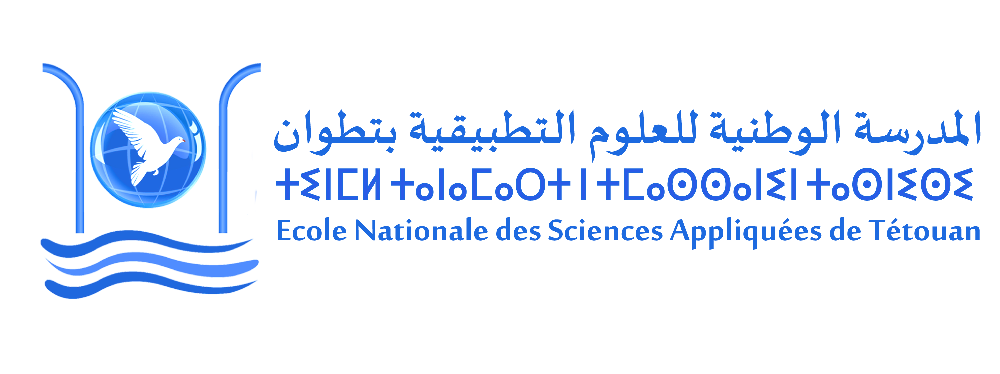

Université Abdelmalek Essaâdi
École nationale des sciences appliquées de Tétouan
Module de Computer Vision
Cycle Ingénieur d’État
Big Data & Artificial Intelligence
Troisième année (BDAI3)
LIFEWISE : conception d’un assistant intelligent multimodal basé sur l’IoT et l’Edge AI pour une assistance proactive
Présenté le :
à préciser
Par :
L’équipe LIFEWISE
13 élèves ingénieurs, six sous-équipes
Encadrement :
| Encadrant ENSATé | Pr. Otman AGHZOUT |
| Responsables | Karamo Sylla, Adila Yassir |
Année Universitaire : 2026-2027